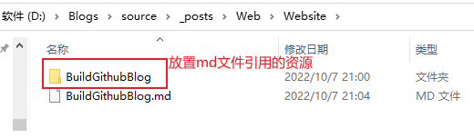
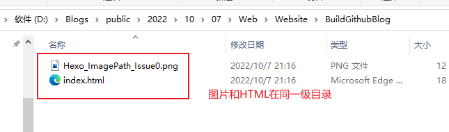
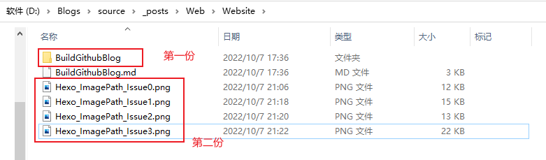
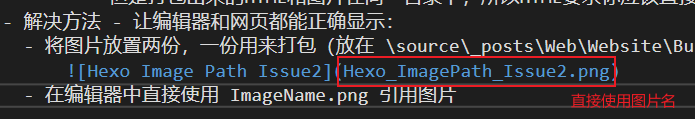

# 一、安装
- 我使用的是 GithubPage + Hexo 工具来搭建自己的网站。
- GithubPage 官方文档
- Hexo 官方文档
- 安装参考博客：简书博主 知乎博主
# 二、注意事项
- 创建 Github 的仓库时 仓库名和用户名.github.io 保持一模一样，这官方规定的 GithubPage 个人账户命名规则，否则就会出现各种各样的问题！
- 仓库必须公有或者付费私有，否则就不能访问自定义网站！
- 用管理员启动 GitBash 执行命令，否则可能权限不足！
- 重新安装解决一切。
- Visual Studio 支持 Markdown 的开发，只需要下载 Markdown 插件就行。
# 三、Hexo 资源问题 - 图像 - Visual Studio
- 假设创建了一个 page，生成的 md 文件在路径 \source_posts\Web\Website\BuildGithubBlog.md 下。
- 那么会自动创建 \source_posts\Web\Website\BuildGithubBlog\ 文件夹用来存放资源，比如：图片。
 - 所以在 md 文件里面只需要用相对路径 BuildGithubBlog/ImageName.png 就可以引用图片。
- 这在编辑器下查看没有任何问题，但是发布网页查看图片就无效！
- 那么会自动创建 \source_posts\Web\Website\BuildGithubBlog\ 文件夹用来存放资源，比如：图片。
- 原因：打包出来的图片路径和 HTML 文件路径在同一文件夹！导致前面的相对路径引用无效！
- 冲突：这里有个冲突就是你的图片必须放在 BuildGithubBlog\ 目录下面才能正确打包，所以你在 md 中的格式全是相对路径 BuildGithubBlog/ImageName.png，
但是打包出来的 HTML 和图片在同一目录下，所以 HTML 要求你应该直接使用 ImageName.png! - 解决方法 - 让编辑器和网页都能正确显示：
- 将图片放置两份，一份用来打包（放在 \source_posts\Web\Website\BuildGithubBlog\ 下），一份用来编辑器查看（放在 md 文件同级目录 \source_posts\Web\Website\ 下）。
 - 在编辑器中直接使用 ImageName.png 引用图片

- 将图片放置两份，一份用来打包（放在 \source_posts\Web\Website\BuildGithubBlog\ 下），一份用来编辑器查看（放在 md 文件同级目录 \source_posts\Web\Website\ 下）。
- 冲突：这里有个冲突就是你的图片必须放在 BuildGithubBlog\ 目录下面才能正确打包，所以你在 md 中的格式全是相对路径 BuildGithubBlog/ImageName.png，